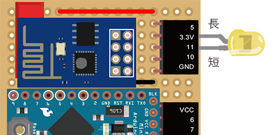
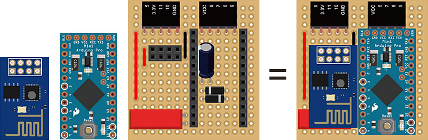
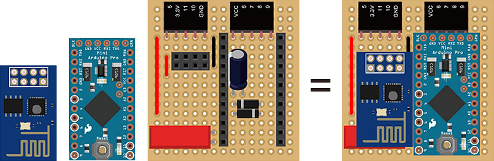

Webduino 的基本介紹與初始化設定
Webduino 這個名稱的由來，就是 Web 與 Arduino 這兩個單字的結合，也正式宣告了可以用 Web 控制 Arduino 的時代來臨，雖然目前市面上也有一些類似的技術或解決方案，但千篇一律的都是寫 C/C++ 讓 Arduino 可以連上網，或是透過網路的方式將 C/C++ 寫入 Arduino，幾乎沒有能夠純粹利用 Web 技術去控制 Arduino 的方式。
Webduino 有別於傳統要寫 C 或 C++ 才能控制 Arduino 的傳感器，Webduino 利用了 WebComponents 的方法，讓使用者可以在完全不用接觸 C 或 C++ 的情形下，只需要撰寫簡單的網頁程式 ( HTML 與 Javascript )，就可以串接 Arduino，大幅降低開發的門檻，讓創造力不受技術門檻的拘束，利用各式各樣形形色色的傳感器，創造與眾不同的物聯網應用。
Webduino 與 Arduino 的差異

 

Webduino 初始化設定
-
1. 組合 Webduino 開發板
將「Arduino Pro Mini 晶片」與「ESP8266 Wifi 晶片」組合至底板，就成為「Webduino 開發板」。 -
2. 接上 LED 開始進行初始化
將單色 LED 燈的「長腳接在 3.3V」，「短腳接在 11」，完成後接上電源，當 LED 亮起，表示可以開始進行初始化，若 LED 遲遲沒有亮起 ( 超過三十秒 )，移除電源與 LED，重新進行此步驟。 -
3. 使用 wifi 搜尋 Webduino 開發板
使用電腦或行動裝置，打開 wifi 搜尋對應的 Webduino 開發板 SSID 名稱，點選之後輸入密碼，即可讓電腦或行動裝置與 Webduino 開發板連線。 -
4. 連線 Webduino 開發板進行設定
打開 Chrome 或 Safari 瀏覽器，於網址列輸入「http://192.168.4.1」，即可打開 Webduino 開發板的設定頁面，開啟設定頁面後，輸入 Webduino 開發板的 device ，以及家裡、公司場所或行動裝置分享的 wifi SSID 與 PASSWORD，點選送出後若出現「OK」的字樣，表示 Webduino 開發板已經和家裡、公司場所或行動裝置分享的 wifi 連線，若超過三十秒沒有出現「OK」字樣，表示初始化設定失敗，請返回步驟 2 重新開始。 -
5. 重啟 Webduino 開發板
出現「OK」字樣之後，表示初始化設定成功，此時移除 Webduino 開發板的電源以及 LED，重新再接上電源即可進行重啟。 -
6. 打開連線狀態網頁，確定是否連線
Webduino 開發板重啟後，可以連結 http://webduino.io/device.html 確認是否連線成功，若在網頁上沒有對應 Webduino 開發板，則需重啟 Webduino 開發板或返回步驟二重新初始化設定。